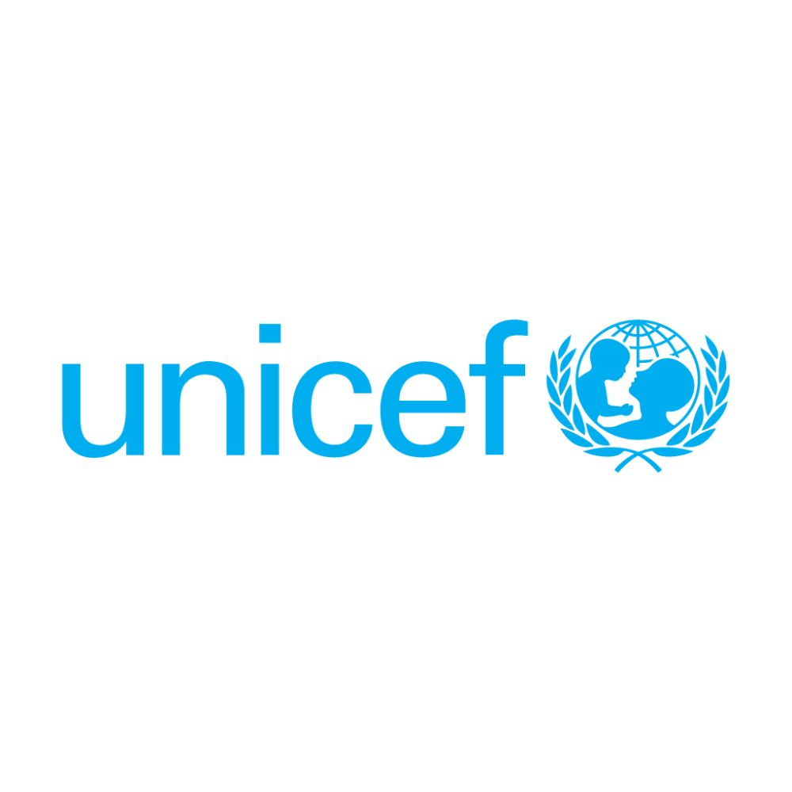
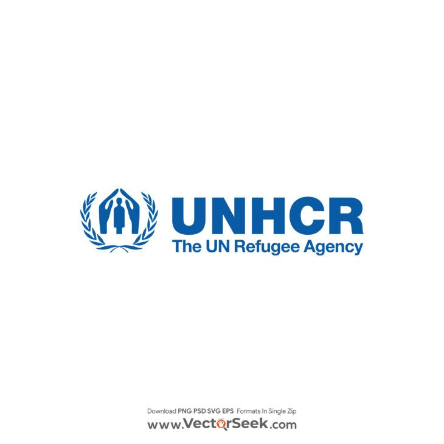
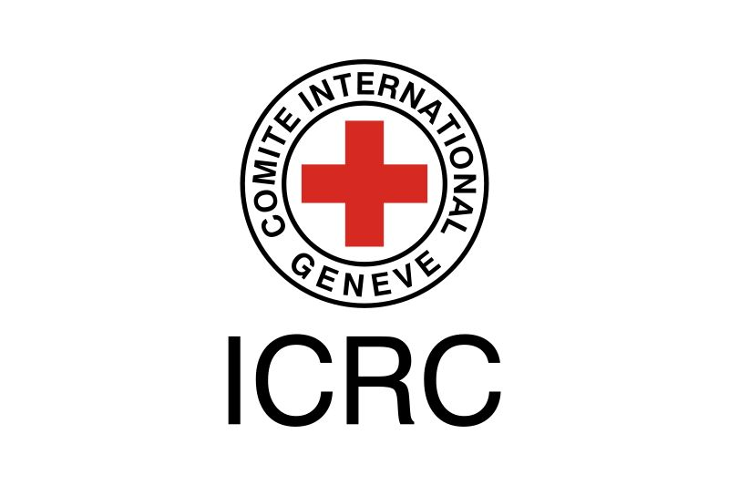
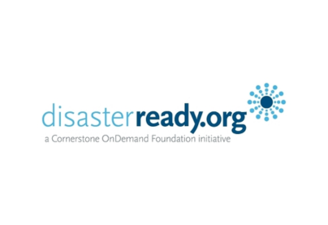

Four areas I draw on, from writing code to running a field survey.

Certificate of completion issued by UNICEF through the Agora learning platform.

Course on durable solutions for internally displaced persons, completed via UNHCR/UNICEF Agora.

Introduction to International Humanitarian Law, provided by the International Committee of the Red Cross via the Humanitarian Leadership Academy.

Essentials of Monitoring, Evaluation, Accountability & Learning, via Cornerstone OnDemand Foundation.
Core project management principles, via Cornerstone OnDemand Foundation.
Course on research and evidence practices used across UNICEF programs.